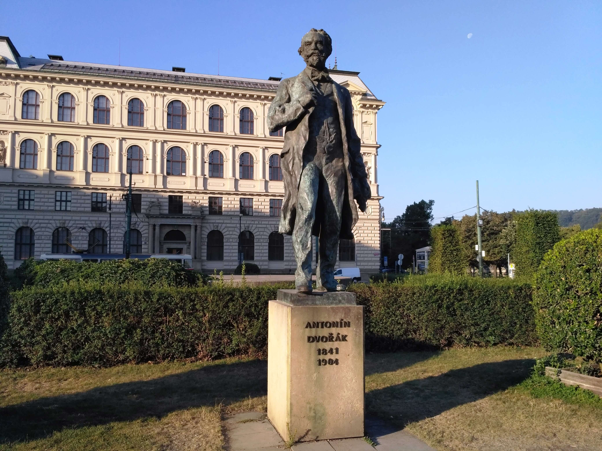

Anton Dvořák (1841-1904) nació en Nelahozeves (Bohemia) el 8 de septiembre de 1841. El pueblo se encuentra a
unos setenta kilómetros de Praga, a orillas del Moldava. Hijo de un carnicero pasó los primeros años de su
vida en un ambiente campesino, escuchando e interpretando la música popular. En 1853 fue enviado por su
padre a Zlonice para que aprendiera la lengua del Imperio, el alemán, sin lo cual no se podía triunfar en
los territorios dominados por los Habsburgo. Allí conoció a sus primeros maestros que le enseñaron además
las técnicas del órgano. Anton Liehmann, su profesor, convence a su padre, vistas las dotes musicales de su
hijo, para que le deje dedicarse a la música. Para ello en 1857 Dvořak empieza a estudiar en la Escuela de
Organo de Praga. Escaso de dinero deja la escuela en 1859 y empieza a ganarse la vida como violinista, tanto
en conjuntos clásicos como intérprete de música popular en restaurantes y salones de baile. Empieza la
composición de polcas. Gran parte de las obras que compuso durante este periodo las destruyó mas tarde. Por
ello cambió en mas de una ocasión los números de sus Opus.
Anton Dvořák (1841-1904) nació en Nelahozeves (Bohemia) el 8 de septiembre de 1841. El pueblo se encuentra a
unos setenta kilómetros de Praga, a orillas del Moldava. Hijo de un carnicero pasó los primeros años de su
vida en un ambiente campesino, escuchando e interpretando la música popular. En 1853 fue enviado por su
padre a Zlonice para que aprendiera la lengua del Imperio, el alemán, sin lo cual no se podía triunfar en
los territorios dominados por los Habsburgo. Allí conoció a sus primeros maestros que le enseñaron además
las técnicas del órgano. Anton Liehmann, su profesor, convence a su padre, vistas las dotes musicales de su
hijo, para que le deje dedicarse a la música. Para ello en 1857 Dvořak empieza a estudiar en la Escuela de
Organo de Praga. Escaso de dinero deja la escuela en 1859 y empieza a ganarse la vida como violinista, tanto
en conjuntos clásicos como intérprete de música popular en restaurantes y salones de baile. Empieza la
composición de polcas. Gran parte de las obras que compuso durante este periodo las destruyó mas tarde. Por
ello cambió en mas de una ocasión los números de sus Opus.
Dvořak escribe nueve sinfonías pero solamente conservó en su lista de obras las cinco últimas. Las cuatro
primeras debían ser destruidas, pero por suerte se han podido recuperar mas o menor tarde. Estas cuatro
primeras sinfonías carecen de número de opus, por ello antiguamente la numeración era diferente. Así la más
conocida, la novena, llevaba el Nº 5.
Jarmil Burghauser (1921-1997) compositor y musicólogo checo, estudió la obra de Dvořak, editando un catálogo
de sus obras completas. Numeró las obras por el orden cronológico verdadero de su composición, sin tener en
cuenta la fecha de edición. La numeración consta de la letra B seguida por su número de orden.
La “Sinfonía Nº 1 en do menor” (Las Campanas de Zlonice) B 9 fue compuesta probablemente entre el 14 de
febrero de 1865 y el 24 de marzo del mismo año. Es posible que la escribiera para enviarla a un concurso en
Alemania, pero lo cierto es que no la volvió a ver. Esto la salvó no solo de las posibles correcciones, sino
de que fuera quemada junto a las otras obras que no aparecen mas tarde en su catálogo. En 1884 Rudolf
Dvořak, que no era pariente del compositor, encontró entre libreros de libros viejos en Leipzig la sinfonía
y la compró. La conservó hasta su muerte en 1920, pasando a su hijo. Tres años mas tarde se supo de su
existencia, pero todavía tuvo que esperar bastante tiempo para ser estrenada en Brno el 4 de octubre de 1936
y editada en bastante malas condiciones y con cortes. La partitura completa fue editada por primera vez en
1961.
El título de la obra no se encuentra escrito en el manuscrito, pero Dvořak se refería a esta obra dándole
este nombre. Expresa los sentimientos durante la estancia vivida en dicho lugar, en el cual había tocado el
órgano de su Iglesia.
El primer movimiento allegro empieza con una introducción consistente en una solemne fanfarria del viento.
El primer tema es serio y de carácter sombrío, con cierto carácter de himno. En contraste el segundo tema es
melódico pero conservando su ambiente. Durante el desarrollo los temas se van alternando modificándose. Una
conclusiva coda termina el movimiento.
El segundo movimiento adagio molto, después de una larga introducción, presenta el tema principal de
delicado lirismo e inspiración clásica, con sentidos solos de oboe. Durante el desarrollo hace uso de una
rica polifonía. Una fanfarria de trompas y trompetas precede a la reexposición, con marcados momentos de
inspiración en Beethoven.
El tercer movimiento, allegretto, tiene forma de scherzo. Es nervioso y agitado, usando frases cortas. El
trio es más tranquilo sin perder su carácter rítmico. El scherzo se repite como es habitual.
Termina con un allegro animato con dominio del viento y temas poco diferenciados. Antes de la recapitulación
aparecen atrevidas modulaciones que nos llevan hacia la solemne resolución de la obra, con una coda con
fanfarrias que nos recuerdan el tañido de las campanas de Zlonice.
La “Sinfonía Nº 2 en si bemol mayor” Op.4, B 12 fue compuesta entre el 1 de agosto de 1865 y el 9 de octubre
del mismo año, o sea poco tiempo después de la anterior. Durante esta época Dvořak estaba enamorado de una
alumna suya, Josefa Čermáková y expresa los sentimientos provocados por su rechazo. Mas tarde se casaría con
su hermana Ana. Es una obra que no fue abandonada por su autor. En 1887 empezó una revisión para poder ser
publicada por Simrock y después de una segunda revisión se estrenó en el Rudolfinium de Praga el 11 de marzo
del año 1888. Pero su publicación no se realizaría hasta después de la muerte de su autor, en el año 1959.
El primer movimiento es un allegro con moto dominado por el ritmo del tema principal. Después de una
introducción aparece el tema principal en los violines. El ritmo se apacigua cuando violines y violas
presentan el segundo tema, pero la calma es momentánea. La madera está impaciente para volver a intervenir.
El carácter rítmico no se abandona, excepto en la breve cita del segundo tema en la recapitulación,
terminando con una dinámica coda.
El segundo movimiento poco adagio empieza con una oscura introducción llena de suspiros, antes de presentar
el primer tema lírico de matices nostálgicos. El segundo tema contiene bellos solos del clarinete, pero sin
abandonar la atmósfera apesadumbrada que posee el movimiento. Dvořak expresa el dolor de su desgraciado
amor. En el desarrollo encontramos una sección fugada y un momento de climax subrayado por los timbales.
Termina con una esperanzadora coda.
Continúa con un scherzo mas alegre. Una parte lírica presenta una melodía con los rasgos típicos del estilo
de Dvořak, alternando con otra sección más rítmica. El trio es más tranquilo con rasgos indudables del
Dvořak mas maduro. Luego se repite el scherzo terminando con una breve coda.
El movimiento final es un allegro con fuoco. El tema principal es alegre y sencillo. El segundo tema tiene
cierta influencia de Brahms. Los elementos temáticos se van aproximando al climax mediante diversos tuttis
subrayados por los trombones. Unos triunfantes compases dan fin a la obra.
El primer éxito de Dvořak llegaría el 19 de marzo de 1873, cuando estrenó su cantata “Hymnus”, basada en un
tema patriótico. Gracias a ello pudo casarse con Anna Čermáková, contralto de los coros de la Opera Nacional
de Praga, hermana de su primer amor imposible. Sus suegros se oponían a esta boda, por la poca categoría del
novio, entonces un simple violinista de la orquesta del Teatro Provisional de Praga, cuyo director en
aquella época era Smetana. Pero la cosa se complicó cuando Anna anunció que estaba embarazada. Finalmente la
boda se celebró el 17 de noviembre de 1873. Dvořak se encontraba en dificultades financieras y además
esperaba un hijo. Logró un trabajo como organista y buscó una subvención para continuar su obra. Para ello
envió diversas obras, entre ellas un par de sinfonías, para lograr el Premio del Estado Austríaco.
La “Sinfonía Nº 3 en mi bemol mayor” Op.10, B 34 fue compuesta entre el mes de abril de 1873 y el 4 de julio
del mismo año. La Orquesta Filarmónica de Praga, bajo la dirección de Smetana, la estrenó el 30 de marzo de
1874, en la sala de conciertos de la Isla de Zofin. Con esta obra, Dvořak ganó en 1875 un premio del Estado
Austríaco, logrando el afecto de importantes músicos como Johannes Brahms, Eduardo Hanslick y Johann
Herbeck, a pesar de la influencia wagneriana que puede apreciarse en la obra. La buena opinión de Brahms,
como miembro del jurado, fue de una gran ayuda. Pero la obra no se publicaría hasta 1911.
Escrita inusualmente en tres movimientos, empieza con un allegro moderato cuyo tema principal es amplio y
apasionado, con evidentes rasgos wagnerianos. El segundo tema lírico deriva de una parte del primero que
domina el movimiento, hasta llegar a la coda basada en el mismo tema.
El segundo movimiento es un adagio molto, tempo di marcia. Es una marcha fúnebre escrita en forma ternaria.
No tiene un carácter trágico, mas bien llena de sentimiento. La sección central tiene características
wagnerianas, con el empleo de su peculiar instrumentación. Después del retorno a la marcha inicial, acaba
con una serena coda.
Termina con un allegro vivace de construcción bastante libre, como un rondó en forma sonata. El tema
principal muestra gran energía arrastrando a toda la música, a través de su osado desarrollo, hacia una
triunfal conclusión. Una dinámica coda dominada por el metal finaliza la obra.
La “Sinfonía Nº 4 en re menor” Op.13, B 41 fue compuesta entre los meses de enero y marzo de 1874, en la
época en que Dvořak se convierte en el organista de la iglesia parroquial Saint-Adalbert de Praga. El
scherzo fue interpretado por Smetana en el mes de mayo de 1874, pero la primera audición completa no se
realizó hasta el 6 de abril de 1892, dirigida por el propio Dvořak, en uno de los llamados Conciertos
Eslavos de Praga. Pero no se publicó hasta el año 1912.
El primer movimiento allegro empieza misteriosamente, hasta llegar a una fanfarria de los metales que nos
conduce a la enunciación del vigoroso primer tema, de una gran fuerza rítmica. Totalmente contrastado se
presenta el segundo tema. Es de un gran vuelo lírico, una de las grandes invenciones melódicas de Dvořak. El
retorno de la fanfarria marca el principio del desarrollo, con amplias modulaciones. Los temas vuelven a
repetirse en la recapitulación, terminando con una corta y enérgica coda.
El segundo movimiento es un andante sostenuto e molto cantábile. Consiste en un tema y variaciones. El tema
es de un amplio desarrollo y nos recuerda por su cromatismo al Tannhäuser wagneriano. La primera variación
corre a cargo de los violines y oboes, la segunda es interpretada por los violonchelos y la tercera por la
madera en síncopas. Sigue una sección dramática fugada. La coda es delicada, introducida por los clarinetes.
El scherzo, allegro feroce, posee una gran fuerza rítmica. La sección lírica, una especie de marcha
operística, tiene una evidente influencia de Berlioz. El trio es característico de Dvořak, con su aire de
marcha popular que va creciendo, para luego desvanecerse. Después de repetirse el scherzo termina con una
coda que posee algún recuerdo de Beethoven.
Termina con un allegro con brio con un primer tema repetitivo. Un sencillo dibujo rítmico ta, ta, ta, tara,
se va repitiendo una y otra vez, hasta que como regalo del cielo por nuestra paciencia, aparece el segundo
tema lírico, una maravillosa melodía, una de las mas sublimes que ha escrito Dvořak. Reaparece el tema
obsesivo del principio en el breve desarrollo y en la recapitulación el segundo tema, se expande
brillantemente antes de que una exuberante coda ponga término a la obra.
La “Sinfonía Nº 5 en fa mayor” Op.76, B 54 fue empezada el 15 de junio de 1875 y terminada el 23 de julio.
Fue la tercera sinfonía publicada en vida de Dvořak, por lo cual antiguamente era conocida como la tercera y
con el número de opus 24. Revisada por Dvořak en 1887, antes de entregarla a Simrock para su publicación en
1888. Se estrenó en Praga el 25 de marzo de 1879 bajo la dirección de Adolf Cech y dedicada a Hans von
Bülow, uno de sus mejores defensores.
Fritz Simrock era el editor de Brahms. La amistad del compositor alemán con Dvořak ayudó a que su editor se
interesara por sus obras. Brahms como miembro del jurado del Premio Nacional de Austria conocía el valor
musical de la obra de Dvořak y empieza a introducirlo en los ambientes internacionales. Simrock publicó la
obra cuando ya había editado otras sinfonías posteriores de Dvořak, la sexta como número uno y la séptima
como número dos. Debido a motivos comerciales, una obra nueva se vende mejor que una recuperada del pasado,
presento la quinta sinfonía de Dvořak como una nueva obra, dándole el número tres y cambiando su número de
opus del 24 al 76. Esta confusión duró hasta mediados del siglo XX, cuando las nueve sinfonías fueron
numeradas conforme a su cronología.
El primer movimiento allegro ma non troppo empieza suavemente con un tema en arpegios interpretado por dos
clarinetes. El segundo tema es ligero, suavemente melódico. Se respira un ambiente de bucólica paz. El
desarrollo se basa en el tema principal. Termina con una placentera y pastoral coda.
El segundo movimiento andante con moto introduce el tema principal por medio de los violoncelos. La primera
frase es similar a la del principio del primer concierto para piano de Tchaikovsky. El tema principal pasa a
los violines y luego a la madera. Por su rasgo melancólico es parecido a una Dumka, una danza de origen
ucraniano, muchas veces utilizada por Dvořak. El tema se va variando empleando una orquestación sencilla,
casi siempre reducida a la cuerda y las maderas, excepto los dos reducidos momentos de climax, en que
utiliza trompetas y trombones.
El scherzo empieza con una introducción lenta que nos lleva a un vivo ritmo de danza. El trio es más calmado
con intercambio de frases cortas entre la cuerda y la madera. Luego regresa el scherzo que ya posee el aire
de las futuras Danzas Eslavas.
Termina con un allegro molto cuyo tema principal es agitado con variadas modulaciones, contrastando con el
suave segundo tema. Pero pronto el viento vuelve a presentar el tema principal. En la recapitulación el tema
principal es presentado por un solo del oboe que pasa al clarinete bajo, antes de regresar a la orquesta.
Antes del final se escuchan reminiscencias del tema principal del primer movimiento en la flauta, luego en
el clarinete y la trompa. La coda es brillante, con fanfarrias de las trompetas compitiendo con los
trombones y con el apoyo de los timbales.
Dvořak como hemos dicho ganó en 1875 un premio del Estado Austríaco dotado con 400 florines, una pequeña
fortuna en aquella época. Volvió a ganar en 1876 y en 1877, con lo cual tenía asegurada su vida y podía
dedicarse plenamente a componer. Además conoció a su admirador Johannes Brahms a través del crítico Eduard
Hanslick. El compositor alemán le abrió las puertas a su editor Fritz Simrock para que pudiera publicar sus
obras. El verdadero éxito creador de Dvořak llegaría con la publicación en 1878 de su primera colección de
Danzas Eslavas. Empezaba su etapa de música nacionalista.
Como nota complementaria haremos una pequeña aclaración sobre Hanslick, por su influencia crítica en la
historia musical de la época. Eduard Hanslick (1825-1904) nació en Praga pero su formación fue germánica,
ejerciendo como crítico musical en importantes periódicos de Viena. Profesor de la Universidad de Viena,
entre los años 1870 y 1895, ocupó la cátedra de Historia y Estética de la Música. Sus ideas musicales son
expresadas en su ensayo “De la belleza musical. Una contribución a la revisión de la estética musical”,
editado en Leipzig en 1854. Defiende la pureza en la música. Su belleza se encuentra en si misma, sin
aspirar a representar imágenes ni expresar mensajes. Combate el descriptivismo en la música, rechazando las
nuevas tendencias musicales que partiendo de Berlioz y Liszt llegaban a su máximo representante Wagner. Con
ello aparecían los aficionados a la música divididos en dos bandos, los seguidores de la pureza clásica
representada por Brahms y los modernistas seguidores de Wagner.
La “Sinfonía Nº 6 en re mayor” Op.60, B 112 fue empezada el 27 de agosto de 1880 y terminada el 15 de
octubre del mismo año. Se estrenó en Praga el 25 de marzo de 1881 por la Orquesta Filarmónica de Praga
dirigida por Alfred Čech y se publicó como su primera sinfonía. En aquellos momento Dvořak quería que fuera
realmente su primera sinfonía, rechazando las cinco anteriores. Esta obra tiene su origen en un encargo
realizado por Hans Richter y la Filarmónica de Viena, pero por motivos políticos no pudieron estrenarla en
Viena.

El primer movimiento allegro non tanto comienza presentando el tema principal. Empezando suavemente la
música se va caldeando. El segundo tema surge de modo fluido en los violoncelos y trompas, con un solo de
oboe. El desarrollo empieza de modo misterioso y es rico en contrastes. La recapitulación nos vuelve a
presentar los temas variados, avanzando hasta el climax, repitiendo el tema principal. La música se atenúa
hasta que la coda, también basada en el tema principal, termina con fuerza el movimiento. La música denota
la influencia de Brahms.
El adagio tiene un calor romántico basado en su tema principal. Una introducción de cuatro compases, que se
repetirá varias veces durante el movimiento, da paso al tema principal. Después de una intervención del
clarinete contestado por la trompa, se recapitula el tema principal. La sección central se basa en los
cuatro compases de la introducción. El oboe presenta una nueva variación sobre este motivo. La flauta repite
de nuevo el tema principal que luego pasa a la orquesta. Una cadenza de la flauta solista antecede a un
crescendo. Luego el tema principal aparece en los violonchelos. El motivo inicial cierra el movimiento.
El scherzo lleva el subtítulo de furiant. Se trata de una danza popular checa de carácter muy enérgico. El
scherzo se repite antes de presentar el trio, más apacible y calmado, contrastando entre las dos furiosas
partes del scherzo. Finalmente se repite de modo abreviado el scherzo, terminando con una rápida coda.
Termina con un allegro con spirito de nuevo con aires brahmsianos. El primer tema es alegre.
Después de una suave introducción se repite en el tutti. El segundo tema es también de carácter animado.
Sigue con un elaborado desarrollo que nos lleva a un climax, después del cual se inicia la recapitulación
variada. Los violines inician una stretta final a la que se incorporan todos los instrumentos interpretando
el tema principal. La coda también está dominada por dicho tema.
Las obras de Dvořak eran conocidas en toda Europa. En el año 1884 viajó a Inglaterra para dirigir su Stabat
Mater en el Royal Albert Hall el día 20 de marzo, obra que había sido estrenada en Londres el 10 de marzo de
1883 en el St. James Hall con un éxito tan grande que motivó su invitación al año siguiente. En el mes de
septiembre de 1884 regresó a Inglaterra para participar en el Festival de Worcester donde dirigió con gran
éxito su sexta sinfonía el 11 de septiembre.
La “Sinfonía Nº 7 en re menor” Op.70, B 141 fue empezada el 13 de diciembre de 1884 y terminada el 17 de
marzo de 1885. La obra era un encargo de la London Philharmonic Society, de la que había sido elegido como
miembro en 1884. Se estrenó el 22 de abril de 1885 en el St Jame’s Hall de Londres bajo la dirección del
propio compositor. Esta obra se publicó por primera vez como su segunda sinfonía.
El primer movimiento allegro maestoso empieza con el primer tema lírico en pianissimo, presentado por las
violas y violonchelos. Este tema irá creciendo a lo largo del movimiento. El segundo tema es luminoso como
un día de verano y es introducido por los violines y maderas. En el desarrollo se elabora especialmente el
tema principal hasta presentarlo de nuevo en un tutti al principio de la recapitulación. Después de repetir
el segundo tema, llega una reafirmación del primero y cuando parece que ha llegado el final, reaparecen
fragmentos del tema inicial que con una melancólica aparición de las trompas llevan a una relajada
conclusión.
El segundo movimiento es un poco adagio. Empieza con una nostálgica melodía en el clarinete, que más tarde
presentan variada la flauta y el oboe. Los violines interpretan un tema melancólico. Un tercer tema aparece
en la trompa, contestada por el clarinete. Después de un desarrollo con frases agitadas, en la
recapitulación los temas son presentados en orden inverso. Los violonchelos interpretan la melodía escuchada
por la flauta y el oboe. Los violines y violas presentan el tema melancólico. Después del climax el oboe
interpreta lastimosamente el tema, que inicialmente habíamos escuchado en el clarinete. Termina con una
serena coda, mientras la música se va apagando.
El scherzo se caracteriza por el pegadizo ritmo sincopado de danza, el tema que más se recuerda de la obra.
Después de su repetición, la parte central es más tranquila con un aire pastoral, evocando la naturaleza con
sus trinos, como cantos de pájaros. Después se repite la primera parte del scherzo. Una sosegada melodía en
las violas prepara la tumultuosa coda.
Termina con un allegro de aire dramático presentado por su primer tema, interpretado por el clarinete y la
trompa. El segundo tema es lírico, presentado por flautas y oboes. Su desarrollo comportará una fuerte
tensión. En la recapitulación los temas alcanzan la misma importancia dramática, terminando con el tema
principal. La coda acaba con una sucesión de acordes, que resuelven el trágico movimiento en un glorioso
final.
Dvořak tenía una situación tan desahogada que pudo adquirir una casa de campo en los alrededores de Praga,
donde se aislaba para la composición de muchas de sus obras. Realiza nuevos viajes a Inglaterra para la
presentación de sus obras. Entre ellas el oratorio “Santa Ludmilla” que interpreta en Leeds el 15 de octubre
de 1886.
La “Sinfonía Nº 8 en sol mayor” Op.88, B 163 fue compuesta entre el 26 de agosto de 1889 y el 8 de noviembre
del mismo año, en la casa de campo que poseía Dvořak en Vysoká, cerca de Praga. Fue estrenada en Praga el 2
de febrero de 1890 dirigida por el propio Dvořak. Tres meses mas tarde la interpreta en Londres y un año mas
tarde en Cambridge, el 15 de junio de 1891, antes de recibir el doctorado honoris causa por dicha
Universidad. La obra fue publicada por la casa inglesa Novello que competía con Simrock, como la cuarta
sinfonía de Dvořak. El motivo de la ruptura con Simrock era debido a su poco interés por las sinfonías.
Decía que las obras menores, como las danzas para piano, eran más comerciales.
Es la obra mas checa de su autor, inspirándose en canciones y danzas folclóricas de su patria. Aunque la
estructura sinfónica empleada es la clásica forma sonata, lo realiza de un modo bastante libre. Cada grupo
temático se divide en dos partes con temas fragmentarios, lo cual criticaba Brahms, diciendo que contenía
demasiados temas dispersos y carecía de elementos básicos. Su estructura es por ello sencilla y fácil de
analizar. Acaso esta sencillez que la acercaba al pueblo era lo que no le gustaba a Brahms.
El primer movimiento allegro con brio consta de una introducción y dos grupos temáticos. Empieza con una
introducción lenta solemne, presentada por los violoncelos, clarinetes, fagots y trompas. Luego la flauta
presenta el primer tema, que después de un crescendo pasa al metal. Siguiendo a una sección introductoria de
la cuerda, aparece el segundo tema en la madera que luego pasa al tutti. Antes de empezar la sección de
desarrollo, se repite la introducción lenta del movimiento. La flauta presenta una variación del primer tema
con respuestas del oboe. Los clarinetes y violas toman el segundo, seguido por una variación en el fagot. El
desarrollo termina con una sección contrapuntística, que utiliza ambos temas. Luego el metal interpreta
nuevamente la introducción, para dar paso a la sección de recapitulación. El primer tema es interpretado por
el corno inglés. El segundo tema aparece en el tutti. Los trombones anuncian la coda final, terminando con
acordes apoyados por los timbales.
El segundo movimiento es un adagio. El tema principal es presentado por la cuerda. Llamadas de la flauta son
contestadas por los clarinetes. La orquesta repite el tema principal con esta vez respuestas de la cuerda.
Se inicia el segundo tema a cargo de la flauta y el oboe sobre escalas descendentes de la cuerda. El violín
solista repite el tema. Interviene la orquesta imponiendo su poderosa voz, interpretando solemnemente el
tema principal. Se repiten las llamadas de la flauta. Después de un pianissimo de la cuerda, las trompas
inician una sección contrapuntística. Se repite el segundo tema sobre las escalas de la cuerda. La flauta y
el clarinete presentan un tema conclusivo. Los primeros violines lo repiten antes del tutti, que conduce a
la conclusión con llamadas de la madera y pianissimo de la cuerda.
El tercer movimiento allegretto grazioso es un scherzo. La cuerda acompañada de la madera nos presenta el
tema principal, una melodía a ritmo de vals lento. El tema del trio corre a cargo de la flauta y el oboe. La
cuerda lo repite en una variación que luego pasa a la madera. Luego interviene nuevamente la cuerda para
concluir en la madera. Seguidamente se repite como es costumbre la primera parte del scherzo. Finaliza con
una conclusiva coda.
Termina con un allegro ma non troppo. Se compone de un tema con variaciones, sobre motivos folclóricos
checos. Una llamada introductoria de las trompetas abre el movimiento. Los violonchelos presentan el tema
principal, que es repetido por los fagots, violonchelos y contrabajos, con repuestas en forma de canon de
los violines y violas. La siguiente variación es una rápida fanfarria de los metales. Sigue una variación
virtuosa a cargo de la flauta. Luego se repite la anterior fanfarria de los metales. La siguiente variación
tiene ritmo de marcha. Sigue una variación sobre la llamada introductoria, mediante las trompas y trompetas.
Continúa con una variación fugada del mismo tema. La cuerda presenta nuevamente el tema principal de modo
solemne. Sigue una nueva variación lenta a cargo de la cuerda y luego otra a cargo de la madera. Es una
especie de crepúsculo estival. Pero de nuevo vuelve la alegría con la fanfarria de los metales que nos
conduce a la coda.
Dvořak llega al máximo de su fama, siendo conocido en toda Europa. La Universidad de Praga le concede el
título de doctor honoris causa en Filosofía. En 1891 vuelve por octava vez a Inglaterra para presentar su
Requiem en el Festival de Birmingham.
Jeannette Thurber, un mecenas americano, lo invita en 1891, para dirigir el Conservatorio de Nueva York.
Pasando por un periodo de dudas, Dvořak acepta el cargo después de serle concedida una excedencia como
profesor del Conservatorio de Praga. Llega a los Estados Unidos en 1892 y no regresará a su patria hasta
1895. Allí compondrá las llamadas obras de influencia americana. Como había realizado antes en su patria, se
interesa por las melodías folclóricas del Nuevo Mundo, tanto negras como indias. En sus composiciones
incluirá temas basados estilísticamente en motivos folclóricos, del mismo modo que había realizado con los
checos, pero siempre conservando su propia originalidad.
La “Sinfonía Nº 9 en mi menor” (Desde el Nuevo Mundo) Op.95, B 178 fue compuesta entre el 10 de enero y el
24 de mayo de 1893. Se estrenó por la orquesta Filarmónica de Nueva York, dirigida por el director húngaro
Anton Seidl, el 16 de diciembre de 1893 en el Carneglie Hall. El éxito según la crítica de la época fue
arrollador. La obra se publicó como la quinta sinfonía de Dvořak, como se ha comentado anteriormente.
Según el propio Dvořak no usa temas americanos en la obra, solo crea melodías con el espíritu nacionalista
del país en el cual la obra fue creada. La estructura empleada es la forma sonata clásica en los dos
movimientos extremos, mientras que los intermedios tienen construcción ternaria en forma de lied.
El primer movimiento empieza con una introducción adagio, una triste frase que es presentada por la cuerda
grave. Después una llamada de la trompa, es contestada por las maderas de un modo mas consolador. Sigue una
sección dramática que prepara el allegro molto. El primer tema es presentado por la trompa con la respuesta
del oboe. El tema pasa al tutti orquestal. Luego aparece el segundo tema. La flauta cierra la exposición con
una melódica interpretación del tercer tema, parecido a un famoso espiritual negro norteamericano. El
desarrollo empieza con este tema por medio de una variación de carácter épico, hasta la nueva aparición del
primer tema que enlaza con la sección de recapitulación, que repite los tres temas. Termina con un dramático
regreso al tema principal que concluye mediante una poderosa coda.
El segundo movimiento es un largo que empieza con unos compases de introducción, hasta que el corno inglés
presenta el tema principal, una triste melodía de sabor negro colonial. Los violines repiten mas tarde el
melancólico tema, que concluye nuevamente el corno inglés. En la parte central los oboes y flautas exponen
un nuevo tema esperanzador, que es repetido con mas tristeza por los violines. Pero repentinamente el oboe
empieza un tema danzante que pasa a la orquesta, llevándola a un climax, escuchándose el tema del primer
movimiento. Se vuelve a la repetición de la primera parte con el tema del corno inglés, terminando con una
etérea coda.
El scherzo empieza con una ondulada melodía fuertemente rítmica, marcada con golpes del timbal. El segundo
elemento del scherzo es una variación del tema principal del largo que interpreta el corno inglés. Luego se
repite la primera sección. El trio tiene el sabor del folclore checo. Termina con la repetición del scherzo
y una extensa coda en que aparece nuevamente el tema principal del primer movimiento y el tercero que
interpretaba la flauta.
El último movimiento es un allegro con fuoco. Después de una introducción de la cuerda, las trompas y
trompetas introducen el tema principal de ritmo marcial. Los violines aumentan con su ritmo la velocidad del
movimiento, hasta su dilución al aparecer el segundo tema melódico en el clarinete, que continúan los
violines, terminando la exposición. En el desarrollo se combinan elementos de los tres últimos movimientos.
El tema principal abre la recapitulación seguido del segundo tema en los violines. Antes de terminar se
recuerdan los temas de los cuatro movimientos. Con lo cual hace una unión cíclica de la estructura de la
sinfonía. En la coda aparece nuevamente el tema principal del primer movimiento, terminando con una
conclusiva stretta.
Durante el verano de 1893 Dvořak pasa una temporada en el campo, en Spillville (Iowa), donde se encontraba
instalada una colonia bohemia. Allí puede escuchar algunas canciones indias. Dvořak no renueva su contrato y
regresa a su patria en 1895. Allí continua su trabajo en el Conservatorio de Praga. En sus últimos años se
dedicó a la ópera y al poema sinfónico. En 1901 es nombrado director del Conservatorio y senador vitalicio
por el Emperador Francisco José. Dvořak muere el 1 de mayo de 1904.
{kind=link}